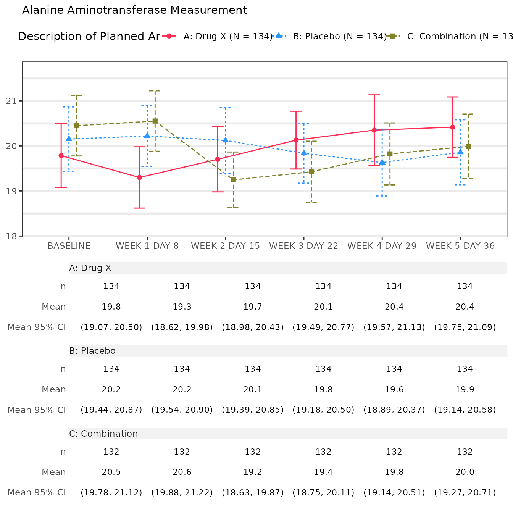
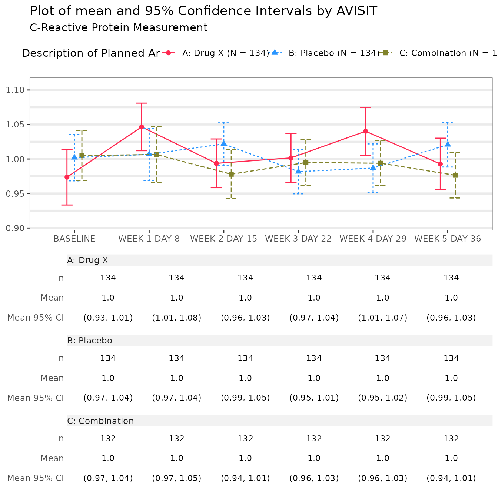
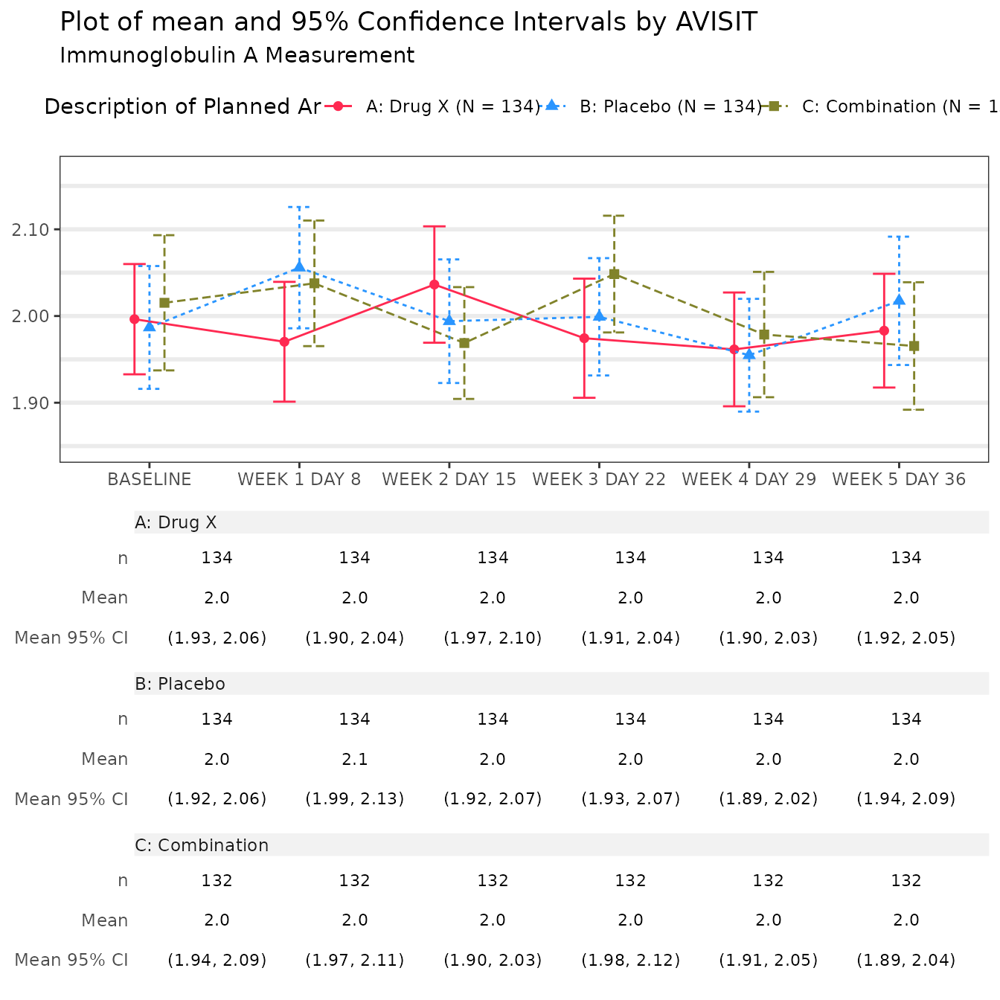

Script_Generator
Benoit Falquet
script_generator.RmdIntroduction
In addition of the embedded run() method to create a
tlg, chevron offers a script-based approach that allows the
user to quickly edit a chevron workflow without the need for modifying a
chevron_tlg object. The script is generated as two separate
components:
script_argsmethod generates a script for parameters assignment based on the default value of the arguments but can be edit either manually after creation or using thedictargument.script_funsmethods expose by default only the script corresponding to the pre processing function in the generated script. However, the main and post processing functions can also be exposed in the script with thedetails = TRUEargument.
Using a chevron-defined object
The object returned by the script methods are vectors of
character with one element per line of the script, that can be easily
rendered.
res <- script_args(aet01_1)
writeLines(res)
#>
#> # Arguments definition ----
#>
#> adam_db <- stop("missing value")
#> arm_var <- "ACTARM"
#> deco <- std_deco("AET01")
#> safety_var <- c("FATAL", "SER", "SERWD", "SERDSM", "RELSER",
#> "WD", "DSM", "REL", "RELWD", "RELDSM", "SEV")
#> req_tables <- c("adsl", "adae")
#> prune_0 <- FALSE
res <- script_funs(aet01_1, adam_db = "syn_data", args = "args_list")
writeLines(res)
#> # Edit Preprocessing Function.
#> pre_fun <- function (adam_db, req_tables = c("adsl", "adae"),
#> arm_var = "ACTARM", safety_var = c("FATAL", "SER", "SERWD",
#> "SERDSM", "RELSER", "WD", "DSM", "REL", "RELWD", "RELDSM",
#> "SEV"), ...)
#> {
#> checkmate::assert_class(adam_db, "dm")
#> aet01_1_check(adam_db, req_tables = req_tables, arm_var = arm_var,
#> safety_var = safety_var)
#> db <- adam_db %>% dm_zoom_to("adae") %>% filter(.data$ANL01FL ==
#> "Y") %>% dm_update_zoomed() %>% dm_zoom_to("adae") %>%
#> mutate(FATAL = .data$AESDTH == "Y", SER = .data$AESER ==
#> "Y", SERWD = (.data$AESER == "Y" & .data$AEACN ==
#> "DRUG WITHDRAWN"), SERDSM = (.data$AESER == "Y" &
#> .data$AEACN %in% c("DRUG INTERRUPTED", "DOSE INCREASED",
#> "DOSE REDUCED")), RELSER = (.data$AESER == "Y" &
#> .data$AREL == "Y"), WD = .data$AEACN == "DRUG WITHDRAWN",
#> DSM = .data$AEACN %in% c("DRUG INTERRUPTED", "DOSE INCREASED",
#> "DOSE REDUCED"), REL = .data$AREL == "Y", RELWD = (.data$AREL ==
#> "Y" & .data$AEACN == "DRUG WITHDRAWN"), RELDSM = (.data$AREL ==
#> "Y" & .data$AEACN %in% c("DRUG INTERRUPTED",
#> "DOSE INCREASED", "DOSE REDUCED")), CTC35 = if ("ATOXGR" %in%
#> colnames(.))
#> .data$ATOXGR %in% c("3", "4", "5"), CTC45 = if ("ATOXGR" %in%
#> colnames(.))
#> .data$ATOXGR %in% c("4", "5"), SEV = if ("ASEV" %in%
#> colnames(.))
#> .data$ASEV == "SEVERE", SMQ01 = if ("SMQ01NAM" %in%
#> colnames(.))
#> .data$SMQ01NAM != "", SMQ02 = if ("SMQ02NAM" %in%
#> colnames(.))
#> .data$SMQ02NAM != "", CQ01 = if ("CQ01NAM" %in%
#> colnames(.))
#> .data$CQ01NAM != "") %>% mutate(AEDECOD = formatters::with_label(.data$AEDECOD,
#> "Dictionary-Derived Term"), AESDTH = formatters::with_label(.data$AESDTH,
#> "Results in Death"), AEACN = formatters::with_label(.data$AEACN,
#> "Action Taken with Study Treatment"), FATAL = formatters::with_label(.data$FATAL,
#> "AE with fatal outcome"), SER = formatters::with_label(.data$SER,
#> "Serious AE"), SEV = if ("SEV" %in% colnames(.))
#> formatters::with_label(.data$SEV, "Severe AE (at greatest intensity)"),
#> SERWD = formatters::with_label(.data$SERWD, "Serious AE leading to withdrawal from treatment"),
#> SERDSM = formatters::with_label(.data$SERDSM, "Serious AE leading to dose modification/interruption"),
#> RELSER = formatters::with_label(.data$RELSER, "Related Serious AE"),
#> WD = formatters::with_label(.data$WD, "AE leading to withdrawal from treatment"),
#> DSM = formatters::with_label(.data$DSM, "AE leading to dose modification/interruption"),
#> REL = formatters::with_label(.data$REL, "Related AE"),
#> RELWD = formatters::with_label(.data$RELWD, "Related AE leading to withdrawal from treatment"),
#> RELDSM = formatters::with_label(.data$RELDSM, "Related AE leading to dose modification/interruption"),
#> CTC35 = if ("CTC35" %in% colnames(.))
#> formatters::with_label(.data$CTC35, "Grade 3-5 AE"),
#> CTC45 = if ("CTC45" %in% colnames(.))
#> formatters::with_label(.data$CTC45, "Grade 4/5 AE")) %>%
#> dm_update_zoomed()
#> missing_rule <- rule(`<Missing>` = c("", NA))
#> new_format <- list(adsl = list(DCSREAS = missing_rule))
#> db <- dunlin::reformat(db, new_format, na_last = TRUE)
#> db
#> }
#>
#> # Create TLG.
#> tlg_output <- rlang::exec(.fn = pre_fun, adam_db = syn_data, !!!args_list) |>
#> rlang::exec(.fn = run, object = aet01_1, !!!args_list, auto_pre = FALSE, check_arg = FALSE)With a modified chevron object
The script generator depends on the functions actually stored in the
object. Modifying the chevron_tlg object can lead to a
different script.
preprocess(aet01_1) <- function(adam_db, new_format, ...) {
dunlin::reformat(adam_db, new_format)
}
res_args <- script_args(aet01_1)
res_funs <- script_funs(aet01_1, adam_db = "syn_data", args = "args_list")Print the generated scripts. Note that a new argument
new_format has been added and the pre processing function
has been modified.
writeLines(res_args)
#>
#> # Arguments definition ----
#>
#> adam_db <- stop("missing value")
#> arm_var <- "ACTARM"
#> deco <- std_deco("AET01")
#> safety_var <- c("FATAL", "SER", "SERWD", "SERDSM", "RELSER",
#> "WD", "DSM", "REL", "RELWD", "RELDSM", "SEV")
#> new_format <- stop("missing value")
#> prune_0 <- FALSE
writeLines(res_funs)
#> # Edit Preprocessing Function.
#> pre_fun <- function(adam_db, new_format, ...) {
#> dunlin::reformat(adam_db, new_format)
#> }
#>
#> # Create TLG.
#> tlg_output <- rlang::exec(.fn = pre_fun, adam_db = syn_data, !!!args_list) |>
#> rlang::exec(.fn = run, object = aet01_1, !!!args_list, auto_pre = FALSE, check_arg = FALSE)With custom argument definition
To define the value of an argument in the directly in the
script_args method, pass it to a named list. Existing
values will be overwritten.
Note: variables (in this case the dm object
syn_data), have to be passed as symbol, using for instance
rlang::sym.
dict <- list(
adam_db = rlang::sym("syn_data"),
some_character = "A",
some_vector = c("A", "B")
)
res_args <- script_args(mng01_1, dict = dict)
res_funs <- script_funs(mng01_1, adam_db = "syn_data", args = "args_list")
writeLines(res_args)
#>
#> # Arguments definition ----
#>
#> adam_db <- syn_data
#> some_character <- "A"
#> some_vector <- c("A", "B")
#> dataset <- "adlb"
#> x_var <- "AVISIT"
#> y_var <- "AVAL"
#> y_name <- "PARAM"
#> y_unit <- NA
#> arm_var <- "ACTARM"
#> center_fun <- c("mean", "median")
#> interval_fun <- c("mean_ci", "mean_sei", "mean_sdi", "median_ci",
#> "quantiles", "range")
#> show_table <- TRUE
#> jitter <- TRUE
#> show_n <- TRUE
#> show_h_grid <- TRUE
#> show_v_grid <- FALSE
#> legend_pos <- "top"
#> line_col <- nestcolor::color_palette()
writeLines(res_funs)
#> # Edit Preprocessing Function.
#> pre_fun <- function (adam_db, dataset, x_var = "AVISIT", ...)
#> {
#> checkmate::assert_class(adam_db, "dm")
#> adam_db <- adam_db %>% dm_zoom_to(!!dataset) %>% filter(.data$ANL01FL ==
#> "Y") %>% dm_update_zoomed()
#> dunlin::dm_unite(adam_db, dataset, x_var, "_")
#> }
#>
#> # Create TLG.
#> tlg_output <- rlang::exec(.fn = pre_fun, adam_db = syn_data, !!!args_list) |>
#> rlang::exec(.fn = run, object = mng01_1, !!!args_list, auto_pre = FALSE, check_arg = FALSE)If saved in a .R file, the generated script can be
executed. The result stored in tlg_output can be
printed.
tmp_args <- tempfile("my_script_args", fileext = "R")
writeLines(res_args, con = tmp_args)
tmp_funs <- tempfile("my_script_funs", fileext = "R")
writeLines(res_funs, con = tmp_funs)
args_list <- list(
dataset = "adlb",
arm_var = "ARM"
)
data("syn_data")
source(tmp_args, local = knitr::knit_global(), echo = TRUE)
#>
#> > adam_db <- syn_data
#>
#> > some_character <- "A"
#>
#> > some_vector <- c("A", "B")
#>
#> > dataset <- "adlb"
#>
#> > x_var <- "AVISIT"
#>
#> > y_var <- "AVAL"
#>
#> > y_name <- "PARAM"
#>
#> > y_unit <- NA
#>
#> > arm_var <- "ACTARM"
#>
#> > center_fun <- c("mean", "median")
#>
#> > interval_fun <- c("mean_ci", "mean_sei", "mean_sdi",
#> + "median_ci", "quantiles", "range")
#>
#> > show_table <- TRUE
#>
#> > jitter <- TRUE
#>
#> > show_n <- TRUE
#>
#> > show_h_grid <- TRUE
#>
#> > show_v_grid <- FALSE
#>
#> > legend_pos <- "top"
#>
#> > line_col <- nestcolor::color_palette()
source(tmp_funs, local = knitr::knit_global())
tlg_output
#> $`Alanine Aminotransferase Measurement`
#>
#> $`C-Reactive Protein Measurement`
#>
#> $`Immunoglobulin A Measurement`
#>
#> attr(,"class")
#> [1] "gg_list" "list"Exploring Main and Post process functions
By specifying details = TRUE the main and post
processing functions are also exposed.
res_fun <- script_funs(mng01_1, adam_db = "syn_data", args = "args_list", details = TRUE)
writeLines(res_fun)
#> # Edit Functions.
#> pre_fun <- function (adam_db, dataset, x_var = "AVISIT", ...)
#> {
#> checkmate::assert_class(adam_db, "dm")
#> adam_db <- adam_db %>% dm_zoom_to(!!dataset) %>% filter(.data$ANL01FL ==
#> "Y") %>% dm_update_zoomed()
#> dunlin::dm_unite(adam_db, dataset, x_var, "_")
#> }
#>
#> main_fun <- function (adam_db, dataset = "adlb", x_var = "AVISIT",
#> y_var = "AVAL", y_name = "PARAM", y_unit = NA, arm_var = "ACTARM",
#> center_fun = c("mean", "median"), interval_fun = c("mean_ci",
#> "mean_sei", "mean_sdi", "median_ci", "quantiles", "range"),
#> show_table = TRUE, jitter = TRUE, show_n = TRUE, show_h_grid = TRUE,
#> show_v_grid = FALSE, legend_pos = "top", line_col = nestcolor::color_palette(),
#> ...)
#> {
#> df <- adam_db[[dataset]]
#> data_ls <- split(df, df$PARAM, drop = TRUE)
#> x_var <- paste(x_var, collapse = "_")
#> center_fun <- match.arg(center_fun)
#> interval_fun <- match.arg(interval_fun)
#> checkmate::assert_flag(show_table)
#> checkmate::assert_flag(jitter)
#> checkmate::assert_flag(show_n)
#> checkmate::assert_flag(show_h_grid)
#> checkmate::assert_flag(show_v_grid)
#> checkmate::assert_character(line_col, null.ok = TRUE)
#> interval_title <- switch(interval_fun, mean_ci = "95% Confidence Intervals",
#> mean_sei = "Standard Error", mean_sdi = "Standard Deviation",
#> median_ci = "95% Confidence Intervals", quantiles = "Interquatile Range",
#> range = "Min-Max Range")
#> title <- paste0("Plot of ", center_fun, " and ", interval_title,
#> " by ", var_labels_for(df, x_var))
#> whiskers_fun <- switch(interval_fun, mean_ci = c("mean_ci_lwr",
#> "mean_ci_upr"), mean_sei = c("mean_sei_lwr", "mean_sei_upr"),
#> mean_sdi = c("mean_sdi_lwr", "mean_sdi_upr"), median_ci = c("median_ci_lwr",
#> "median_ci_upr"), quantiles = c("quantiles_0.25",
#> "quantile_0.75"), range = c("min", "max"))
#> variables <- c(x = x_var, y = y_var, strata = arm_var, paramcd = y_name,
#> y_unit = y_unit)
#> n_func <- if (show_n)
#> "n"
#> else NULL
#> table <- if (show_table)
#> c(n_func, center_fun, interval_fun)
#> else NULL
#> ggtheme <- ggplot2::theme_bw() + ggplot2::theme(legend.position = legend_pos) +
#> ggplot2::theme(axis.title.x = ggplot2::element_blank())
#> ggtheme <- if (!show_v_grid) {
#> ggtheme + ggplot2::theme(panel.grid.major.x = ggplot2::element_blank())
#> }
#> else {
#> ggtheme + ggplot2::theme(panel.grid.major.x = ggplot2::element_line(linewidth = 1))
#> }
#> ggtheme <- if (!show_h_grid) {
#> ggtheme + ggplot2::theme(panel.grid.minor.y = ggplot2::element_blank(),
#> panel.grid.major.y = ggplot2::element_blank())
#> }
#> else {
#> ggtheme + ggplot2::theme(panel.grid.minor.y = ggplot2::element_line(linewidth = 1),
#> panel.grid.major.y = ggplot2::element_line(linewidth = 1))
#> }
#> if (!is.null(names(line_col))) {
#> color_lvl <- sort(unique(df[[arm_var]]))
#> col <- line_col[as.character(color_lvl)]
#> if (anyNA(col)) {
#> missing_col <- setdiff(color_lvl, names(col))
#> stop(paste("Missing color matching for", toString(missing_col)))
#> }
#> col <- unname(col)
#> }
#> else {
#> col <- line_col
#> }
#> ret <- lapply(data_ls, tern::g_lineplot, alt_count = adam_db[["adsl"]],
#> variables = variables, mid = center_fun, interval = interval_fun,
#> whiskers = whiskers_fun, position = ggplot2::position_dodge(width = ifelse(jitter,
#> 0.3, 0)), title = title, table = table, ggtheme = ggtheme,
#> col = col, subtitle_add_unit = !is.na(y_unit))
#> do.call(gg_list, ret)
#> }
#>
#> post_fun <- function (tlg, ...)
#> {
#> tlg
#> }
#>
#> # Create TLG.
#> tlg_output <- rlang::exec(.fn = pre_fun, adam_db = syn_data, !!!args_list) |>
#> rlang::exec(.fn = main_fun, !!!args_list) |>
#> rlang::exec(.fn = post_fun, !!!args_list)